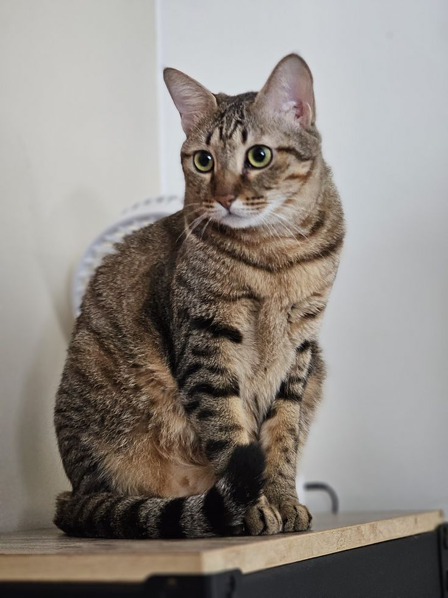

.jpg) Facts about cats
Facts about cats
Cats can jump up to 6 times their height.
They have a total of 18 toes.
Cats sleep for around 13 to 16 hours a day (70% of their life).
1 year of a cats life equals to 15 years of a humans live.
Cats are believed to be the only mammals who don't taste sweetness.
The oldest cat known, lived to the grand age of 36.
The average age for an indoor cat is 15 years while the average age for an outdoor cat is only 3-5 years.
Blue eyed cats are often prone to deafness.
The heaviest cat on record weighed over 46 lbs.
Cats have powerful night vision, allowing them to see at light levels six times lower than what a human needs in order to see.
Cats can see colours, but they don't see quite as many different shades as humans can.
